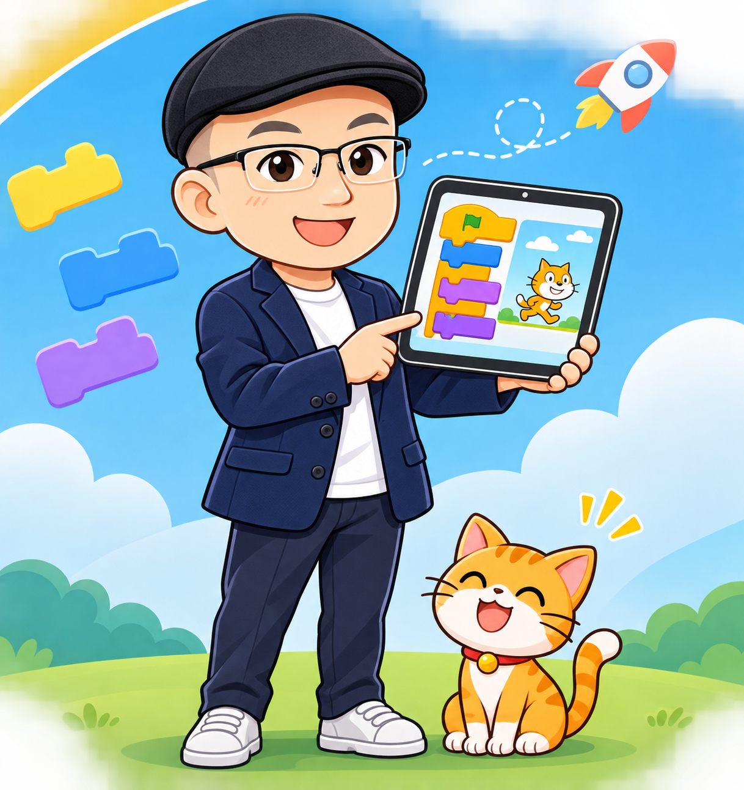
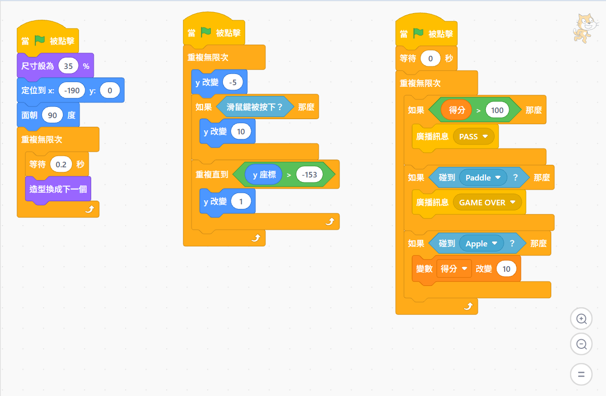
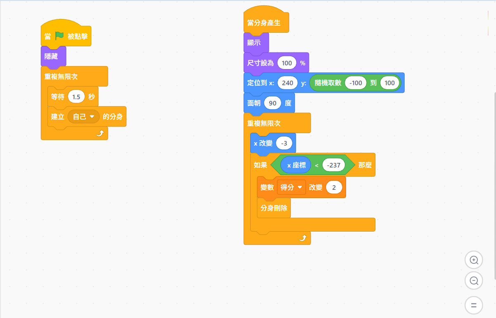
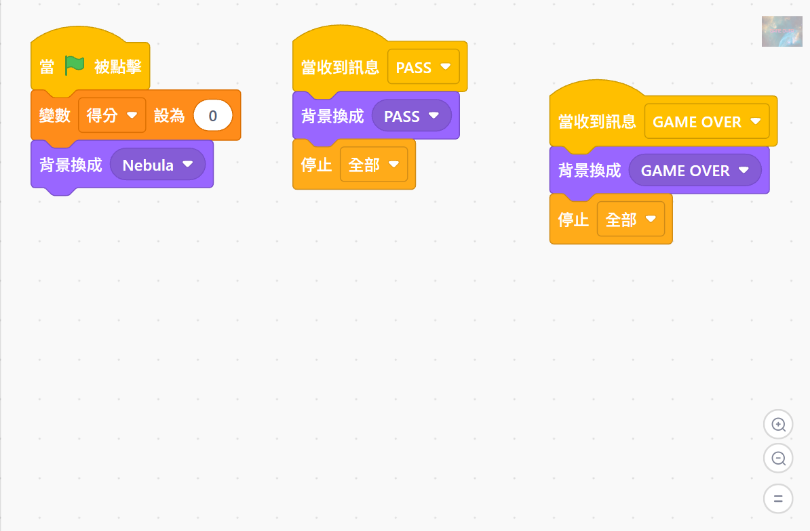

SCRATCH MISSION 05 · 國小四年級
貓咪星際闖關
閃過障礙、收集水果，一起做出會飛的遊戲！
看一看 → 拼一拼 → 按綠旗試試 → 改成你的故事
主辦單位｜高雄科丁聯盟
協辦單位｜獅湖國小
教練｜沈明福（阿福教練）
按住，讓貓咪飛起來！
在遊戲畫面按住滑鼠或手指就上升，放開會下降。閃開障礙、碰到蘋果加分。
這是網頁玩法示意，並非執行 Scratch 專案；得分與速度經簡化，實際遊戲以 Scratch 積木為準。
每一步，都先試再往下
先玩成果、認識角色、完成貓咪上下移動
休息喝水
障礙物分身、碰撞與遊戲結束
休息喝水
水果、得分與過關
改編、交換試玩、分享
下載拆解好的積木
先下載練習版，在 Scratch Desktop 選「檔案 → 從電腦載入」。依照下方角色與任務，把散開的積木接回正確的位置。
下載學生積木拼裝版這份練習版的舞台程式已準備好；貓咪、障礙物、水果的主要指令已逐塊拆開並按類別排列；判斷條件和數值積木保留在洞裡。由左至右是動作、外觀、事件與控制、變數等；感測與運算小積木保留在使用它們的積木裡。畫面太擠時，可縮小積木或拖動空白處找碎片。
讓貓咪飛起來
- 選貓咪 Sprite1，找三頂「當綠旗被點擊」。
- 先找動作、外觀、事件與控制積木，照圖片拼出大小、起點、方向與換造型迴圈。
- 第二組接回「重複無限次」：先讓 y 改變 -5；如果滑鼠鍵被按下，y 改變 10。接著把「重複直到 y 座標 > -153」接在「如果」下方，兩者都放在「重複無限次」裡。把「y 改變 1」放進「重複直到」裡。
- 第三組接回判斷：得分大於 100 廣播 PASS；碰到 Paddle 廣播 GAME OVER；碰到 Apple 得分加 10。
- 按綠旗後先放開滑鼠，觀察貓咪掉到舞台下方時會小幅回升，再按住滑鼠測試上升。回升積木會每次把 y 加 1，直到 y 大於 -153。
查看新版積木圖：貓咪積木與說明

分身工廠開張！
本尊像工廠，負責生出新障礙物；分身像一個個小隊員，各自出場、移動，再離開。
- 選 Paddle，第一組：綠旗 → 隱藏本尊 → 重複無限次，每 1.5 秒建立自己的分身。
- 第二組：當分身產生 → 顯示、設定大小與起點 → 在 y 的 -100 到 100 間隨機選高度。
- 接上重複無限次：x 改變 -3；當 x 座標小於 -237，得分加 2，刪除此分身。
- 按綠旗觀察：障礙物是否連續出現、向左移動？碰到貓咪後是否結束？
工廠生出一個新隊員
新隊員開始執行任務
任務結束後離場
查看新版積木圖：障礙物積木與說明

收集水果得分
- 選 Apple，綠旗 → 隱藏 → 等待隨機 3 到 6 秒 → 建立分身，放在重複無限次中。
- 分身產生後，顯示並從右側隨機高度往左移動。
- 超出左側或碰到貓咪，刪除此分身。貓咪的碰撞程式負責加 10 分。
- 玩一局：留意障礙物通過得 2 分、水果加 10 分；分數大於 100 才通過。
查看新版積木圖：水果積木與說明

查看新版積木圖：舞台如何接收訊息

讓遊戲變成你的故事
換角色、障礙物、得分物件或背景。
改分身速度或出現時間，每次只改一個數字再試玩。
進階挑戰：碰到障礙物先扣生命。想想怎樣避免一次碰撞連續扣分。
選一張提示詞，創造遊戲素材
先選主角、障礙、得分物件或背景，修改文字後複製，貼到老師允許使用的 AI 生圖工具。生成後請老師協助下載：在 Scratch 選角色或舞台的「上傳」，再調整大小、位置並試玩。
主角｜選一個來改編
障礙物｜選一個來改編
得分物件｜選一個來改編
背景｜選一個來改編
我的改編故事：
幫遊戲加上聲音
時間有限時，先選一個「得到物品」聲音，完成遊戲最重要！下列提示詞要貼到具備音效或音樂生成的外部 AI 工具，這個學習單不會直接產生音訊。
選取貓咪、舞台或需要發聲的角色 → 點「音效」→「選擇音效」→ 試聽並挑選。找清脆叮聲當得分、短碰撞聲當失敗、歡樂旋律當過關；音效名稱依實際音效庫為準。回到「程式」，在對應事件加入「播放音效」。
想用 AI 創作？選一個提示詞
把聲音加進 Scratch
- 在老師允許的音訊工具貼上提示詞、生成並下載 MP3 或 WAV；請先試聽並確認工具使用規則。
- 選中要發聲的角色（背景音樂可選舞台）→「音效」→「上傳音效」，選擇下載的檔案。
- 得分聲：在貓咪碰到水果的條件裡，靠近得分積木加入「播放音效」。先試玩，若連續觸發就請老師協助調整。
- 背景音樂：舞台新增一組獨立程式：綠旗 → 重複無限次 →「播放音效直到播放完畢」。遊戲結束時原專案的停止全部會停止程式與聲音。
如果想要動作與音效同時進行，選「播放音效」；如果要等音樂播放完再重播，選「播放音效直到播放完畢」。不要把等待播完的音效放進控制移動的迴圈。
素材與上傳規格請參考 Scratch 官方聲音教學；公開分享前請確認所選 AI 工具及音訊素材的使用權。
第五堂成果發表｜貓咪星際闖關
一起回顧第五堂課，看看孩子如何用 Scratch 積木做出自己的闖關遊戲。
在 YouTube 觀看成果影片公益課程贊助致謝
感謝科丁聯盟高屏分會推動國小 Scratch 公益課程，也謝謝海報上所有捐款單位與個人的支持。
 開啟完整海報大圖
開啟完整海報大圖